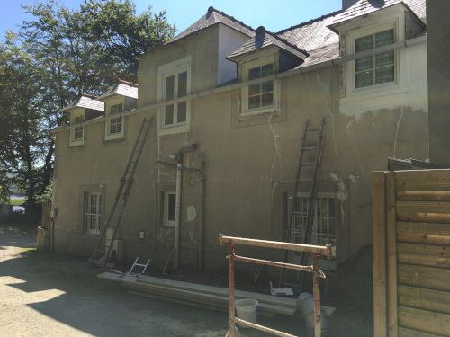
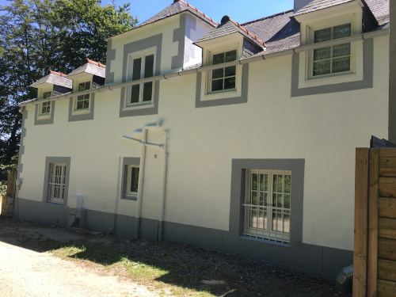
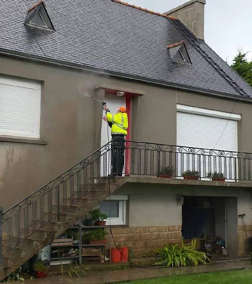
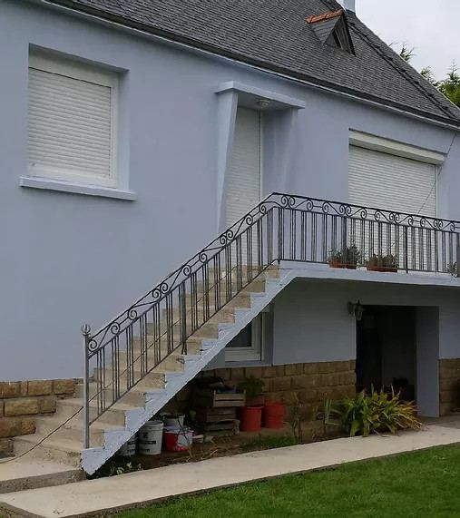
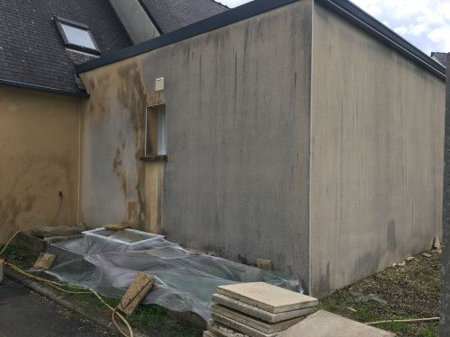
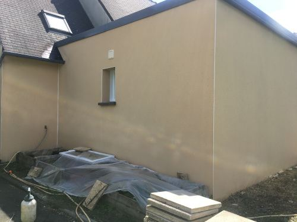
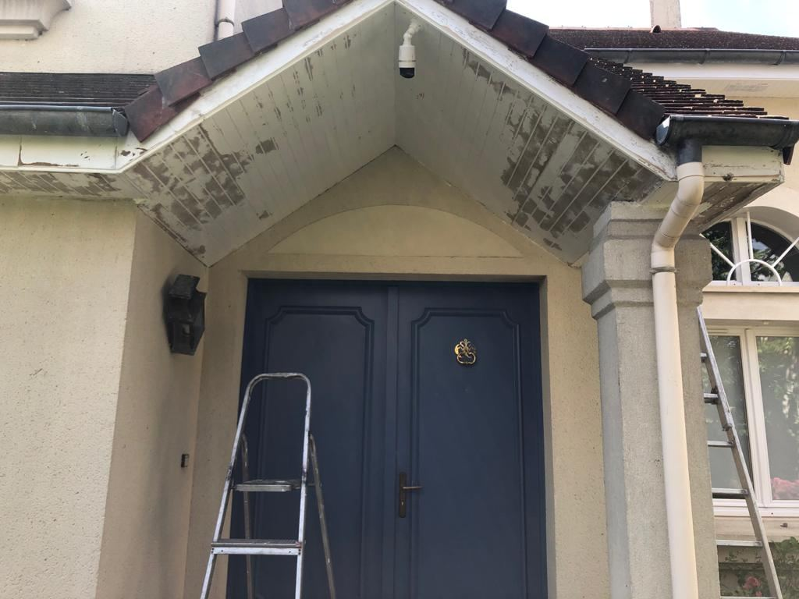

Ravalement · Morlaix et alentours
Ravalement et peinture de façade autour de Morlaix
Coulures, traces vertes, fissures, peinture qui s’écaille : Paul est artisan peintre. Il nettoie la façade, reprend les fissures, puis applique la peinture ou le traitement qui la protégera des pluies d’ouest.
- ✓ Façades, pignons, cheminées, boiseries
- ✓ Paul vous répond lui-même, pas un standard
- ✓ Assuré AXA, attestation sur demande
- ✓ Devis gratuit, écrit, sans engagement
Paul vous rappelle lui-même, du lundi au samedi.
06 50 68 64 65Appelez directement, il répond.
06 50 68 64 65 Avant
Avant Après
AprèsSes chantiers
Ses façades, avant et après.
Des chantiers de Paul, photographiés avant et après son passage. Pas d’images de catalogue.

Avant
Après
Avant
Après
Avant
Après
Avant Après
AprèsPourquoi ne pas attendre
Une façade sale est déjà une façade qui boit l’eau.
Les coulures et les traces vertes ne sont pas qu’une question d’allure : elles montrent un enduit qui retient l’humidité. Et en Finistère nord, la pluie ne manque pas.
La microfissure s’élargit
La pluie entre, le gel l’agrandit. Ce qui se rebouche aujourd’hui se reprend demain à l’échafaudage.
L’humidité passe à l’intérieur
Taches, salpêtre, papier peint qui cloque : la façade finit par se voir de l’intérieur.
L’enduit se décolle
Un enduit gorgé d’eau perd son adhérence. Le ravalement devient alors une réfection complète.
La maison perd de sa valeur
Une façade négligée est la première chose qu’on voit, et la première chose qu’un acheteur négocie.
Un ravalement, ce n’est pas juste un coup de peinture
Une peinture posée sur un mur sale ou fissuré ne tient pas. Paul nettoie d’abord, traite la mousse et les lichens, reprend les fissures, puis applique la finition adaptée au support : peinture, hydrofuge ou lasure sur les boiseries.
C’est la préparation, invisible une fois le chantier fini, qui fait que la façade tient des années.
Pignons, cheminées, boiseries, escaliers
Il reprend aussi les pignons exposés à l’ouest, les souches de cheminée, les boiseries de façade, les escaliers extérieurs et les murets.
Un changement de teinte ou d’aspect demande en général une déclaration préalable en mairie, et certaines communes imposent un nuancier. Paul vous dit quoi vérifier avant de commencer.
Comment ça se passe
- 01Vous appelez
Paul vous répond lui-même, du lundi au samedi de 8 h à 20 h, et note ce que vous voyez.
- 02Il passe voir
Il relève les fissures, les salissures et l’état de l’enduit ou de la pierre. C’est gratuit.
- 03Devis écrit
Préparation, reprises et finition détaillées, poste par poste.
- 04Les travaux
Nettoyage, reprises, peinture : réalisés par Paul lui-même, photos avant et après à l’appui.
Combien coûte un ravalement de façade ?
Le prix dépend de la surface et de la hauteur des murs, du support (enduit, pierre, crépi, bois), du nombre de fissures à reprendre, de la finition choisie et de l’accès. Un tarif au mètre carré donné au téléphone ne veut rien dire.
Sa méthode : il passe voir la façade, puis vous remet un devis écrit, détaillé, gratuit et sans engagement, préparation comprise. Vous savez exactement ce que vous payez, et pourquoi.
Recevoir mon devis gratuitUn artisan proche de chez vous
Installé à Morlaix, rue de Brest, Paul intervient dans un rayon de 30 km : Saint-Martin-des-Champs, Plourin-lès-Morlaix, Plouigneau, Taulé, Carantec, Saint-Pol-de-Léon, Roscoff, Landivisiau, Lanmeur, Plougasnou, Plestin-les-Grèves, Saint-Thégonnec, Pleyber-Christ et toutes les communes alentour. Plus loin, demandez : il se déplace selon le chantier.
Questions fréquentes
Le devis est-il gratuit ?
Oui, gratuit et sans engagement. Paul passe voir la façade avant de chiffrer.
Combien de temps dure un ravalement ?
Cela dépend de la surface, de l’état du mur et de la météo : la peinture ne s’applique pas sous la pluie. La durée prévue figure sur le devis.
Quelle TVA s’applique ?
Sur un logement achevé depuis plus de deux ans, les travaux d’entretien et de rénovation relèvent en général de la TVA à 10 %. Le taux applicable à votre cas figure sur le devis.
Êtes-vous assuré ?
Oui, ses interventions sont couvertes par son assurance professionnelle AXA. L’attestation est disponible sur simple demande.